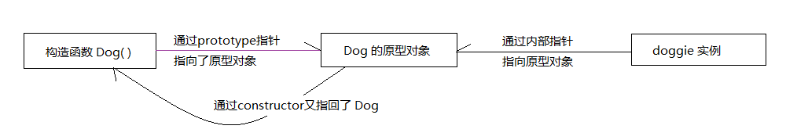

分享人：周建刚
目录
1.背景介绍
2.知识剖析
3.常见问题
4.解决方案
5.编码实战
6.扩展思考
7.参考文献
8.更多讨论
面向对象编程都会涉及到继承这个概念，JS中实现继承的方式主要是通过原型链的方法。 JavaScript本身不提供类实现。 (在ES2015/ES6中引入了class关键字，但是只是语法糖，JavaScript 仍然是基于原型的)。 通过原型这种机制，JavaScript 中的对象从其他对象继承功能特性。
每个函数都有一个属性——prototype。这个prototype的属性值是一个对象（属性的集合），默认只有一个叫做constructor的属性，指向这个函数本身。
每个对象都有一个隐藏的属性——“__proto__”，这个属性引用了创建这个对象的函数的prototype。
即：fn.__proto__ === Fn.prototype
function Dog (name){
this.name = name;
this.type = 'Dog';
}
Dog.prototype.speak = function () {
alert('wang');
}
var doggie = new Dog('jiwawa');
console.log(doggie.name); //jiwawa
doggie.speak(); //wang
在这个例子中，Dog就是一个构造函数，我们使用 new 创建了一个实例对象doggie。
普通对象
最普通的对象：有__proto__属性（指向其原型链），没有prototype属性。
原型对象(person.prototype 原型对象还有constructor属性（指向构造函数对象）)
函数对象
凡是通过new Function()创建的都是函数对象。
拥有__proto__、prototype属性（指向原型对象）。
构造函数,原型和实例的关系:
1.每个构造函数(constructor)都有一个原型对象(prototype)
2.原型对象都包含一个指向构造函数的指针
3.实例都包含一个指向原型 对象的内部指针
4.如果试图引用对象的某个属性,会首先在对象内部寻找该属性,直至找不到,然后才在该对象的原型(prototype)里去找这个属性.
在这个例子中，我们设置了person的name属性，所以我们可以读取到为'name of this person'，当我们删除了person的name属性时，再次读取person.name，从person中找不到之后就会从person的原型也就是person.__proto__ == Person.prototype中查找，幸运的是我们在person的原型找到了`name`属性，但是万一还没有找到呢？原型的原型又是什么呢？
原型链 那Object.prototype的原型呢？ 就是null,所以查到Object.prototype就可以停止查找了
访问对象原型的方法有哪些？
没有正式的方法用于直接访问一个对象的原型对象——原型链中的“连接”被定义在一个内部属性中，在 JavaScript 语言标准中用 [[prototype]] 表示。
然而，大多数现代浏览器还是提供了一个名为 __proto__ （前后各有2个下划线）的属性，其包含了对象的原型。你可以尝试输入 person1.__proto__ 和
person1.__proto__.__proto__，看看代码中的原型链是什么样的！获取实例对象obj的原型对象，有三种方法
obj.__proto__
obj.constructor.prototype
Object.getPrototypeOf(obj)
上面三种方法之中，前两种都不是很可靠。
最新的ES6标准规定，__proto__属性只有浏览器才需要部署，其他环境可以不部署。而obj.constructor.prototype在手动改变原型对象时，可能会失效。
获取原型对象的方法
function Person() {};//构造函数
var person1 = new Person();//函数实例
// 三种方法都能获取到当前对象的原型对象
person1.__proto__===Person.prototype;// true
person1.constructor.prototype===Person.prototype;// true
Object.getPrototypeOf(person1)===Person.prototype;// true
instanceof运算符的原型链原理? instanceof运算符返回一个布尔值，表示指定对象是否为某个构造函数的实例。
function Animal(){
}
var LaoWang = new Animal();
LaoWang instanceof Animal
function Person(){
}
Person.prototype = new Animal();
var Lao li = new Person
LaoWang instanceof Animal // ?
Laowang.__proto__ 有没有 Animal.prototype
instanceof运算符的左边是实例对象，右边是构造函数。它的运算实质是检查右边构建函数的原型对象，是否在左边对象的原型链上。 由于instanceof对整个原型链上的对象都有效，因此同一个实例对象，可能会对多个构造函数都返回true。
参考二 构造函数、原型与实例之间的关系
参考三 【JS】深入理解JS原型和继承
感谢大家观看
BY : 周建刚